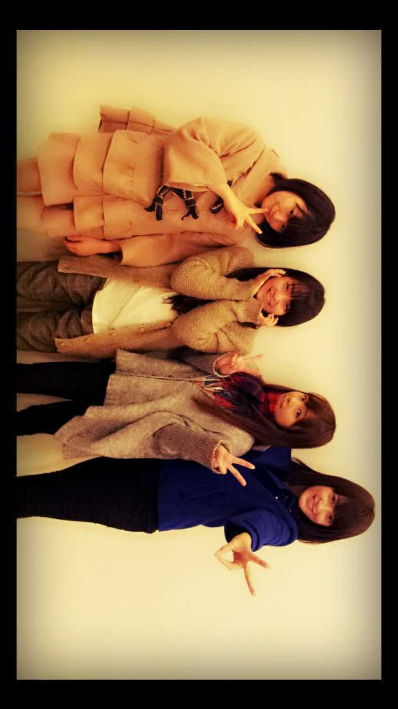

| 2012/11 26 Mon | よぼうせっしゅ。ろってぃ- ★ |
ハロウ(・∪・)ノ☆
まひろでぇす ))
あw 今日
久々に メンバーに会えたよぉぉ
(/Θ`。))
まひろ、せちゃん、
ねね、まりか、かなりんでね、
インフルエンザの
予防接種★うってきたぁ。
チクッ )) ...いいね♪
あの チクッて感じ(+´ω`+)
ねね♪,初インフル予防接種で
うった後15分ほど
時間かかっちゃって...
ねねだけ写ってなぁ〜い
(>ω< ))

で、久々会えたことだしさ...
「この後皆空いてる?☆」
「空いてる ! !」
「よしカフェに行こう*・▽・*)♪」
3時頃やってんけど、
お昼まだ食べてなくて
ちょーど
ペコペコやってんなっ(・ω・)
この５人で
１時間 お店で
ワイワイとお話して
皆かいさぁ〜ん *^^*
本当楽しかったよ。
ありがとう 皆*^^*)/

この写真は 名古屋の
マンモスフリーマーケットの
時だね♪/
そして今日の晩御飯は
☆唐揚げ&
野菜たっぷりスープカレー☆
あったかいの食べなきゃ
身体 冷え冷えなっちゃうからね
(´・ω・`)
ってな感じで
明日も１日
がんばろってぃい(*´∇`*))))
皆様,
おやすみなさい... のし。
コメント(113)
2012/11/26 23:48